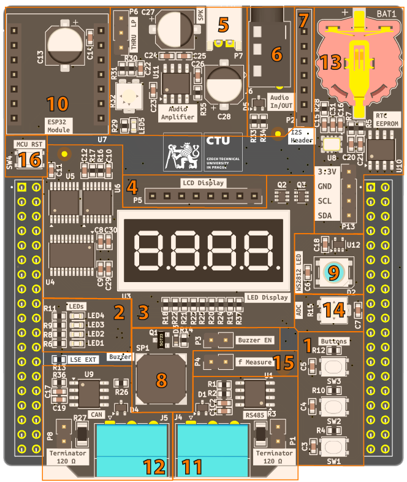

Pro výuku předmětu Aplikované mikroprocesory byl vytvořen nový vývojový kit, který obsahuje základní periferie, se kterými se lze běžně setkat při práci s mikrokontroléry. Umožňuje procvičit například práci s čítači a časovači, rozhraními USART, A/D převodníky a řadou dalších hardwarových periferií.
V následujícím obrázku a tabulce je uveden přehled dostupných funkcí desky a periferií mikrokontroléru, které jednotlivé bloky využívají.
Kit je primárně určen pro Nucleo-F401RE, na kterém lze využít většinu jeho funkcí. Pro plné využití je vhodnější Nucleo-F446RE, které navíc umožňuje pracovat například s integrovaným DAC a sběrnicí CAN.
Celé schéma zapojení je k dispozici jako PDF:
Kompletní zdrojová data projektu jsou po přihlášení dostupná také na:

| # | Použití | HW periferie | Použití |
|---|---|---|---|
| 1 | 3× tlačítka | EXTI, TIM2 | Využití externích přerušení a Input Capture |
| 2 | 4× LED | GPIO | Základní digitální výstupy |
| 3 | LED Display | SPI3 + TIM2 + GPIO | TIM2 pro řízení intenzity, SPI sdílené s LCD |
| 4 | LCD | SPI3 + TIM3 + GPIO | TIM3 pro řízení intenzity, SPI sdílené s LED displejem |
| 5 | PWM Audio | TIM1 | Výstup lze vést přímo nebo přes dolní propust a zesilovač do reproduktoru |
| 6 | Audio In/Out | ADC, DAC | Stereo jack může sloužit jako vstup signálu do A/D převodníku; na F446 lze rovněž generovat analogový signál pomocí integrovaného DAC |
| 7 | I2S Audio | I2S2 | Digitální audio rozhraní |
| 8 | Buzzer | TIM1 | Řízení integrovaného bzučáku pomocí PWM |
| 9 | LED WS2812 | SPI1 / TIM3 | Generování přesného časování a kódování pro řízení adresovatelné LED |
| - | USART → PC | USART2 | Komunikace s PC prostřednictvím rozhraní Nucleo |
| 10 | USART → ESP32 | USART6 + GPIO | Komunikace s ESP32-S3, které lze využít jako Wi-Fi nebo Bluetooth gateway |
| 11 | RS-485 | USART1 + GPIO | Řízení signálu DE pomocí GPIO |
| 12 | CAN | CAN2 | Dostupné pouze na F446 nebo jiném kompatibilním MCU s CAN |
| 13 | RTC | I2C1 + LSE | Externí RTC; po úpravě Nuclea lze využít také LSE takt pro interní RTC mikrokontroléru |
| 13 | EEPROM | I2C1 + GPIO | Signál WP je řízen pomocí GPIO |
| 14 | Trimmer | ADC | Analogový vstup pro jednoduché testování A/D převodníku |
| 15 | f Measure | TIM4 | Vstup pro měření externí frekvence |
| 16 | MCU Reset | RST | Reset mikrokontroléru |